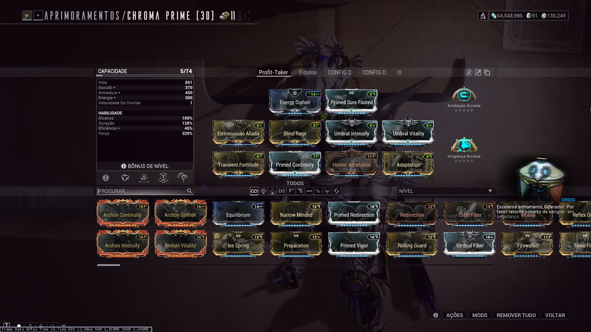
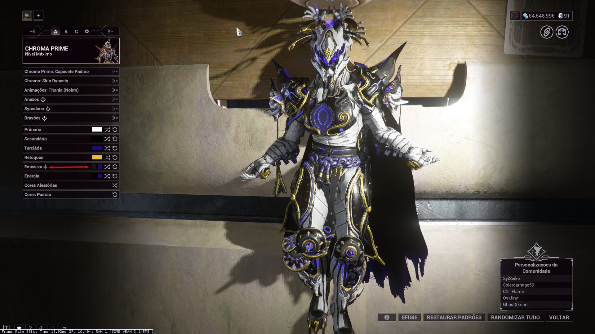
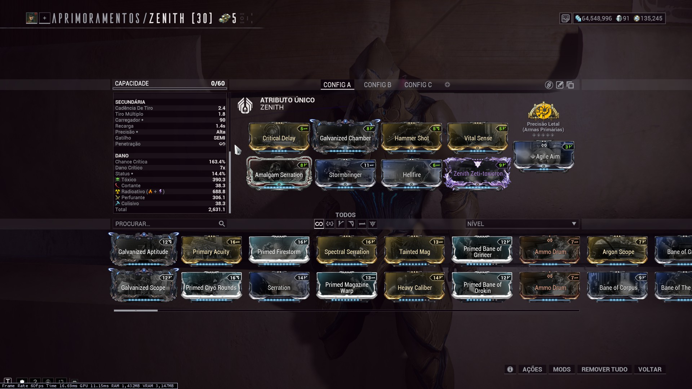
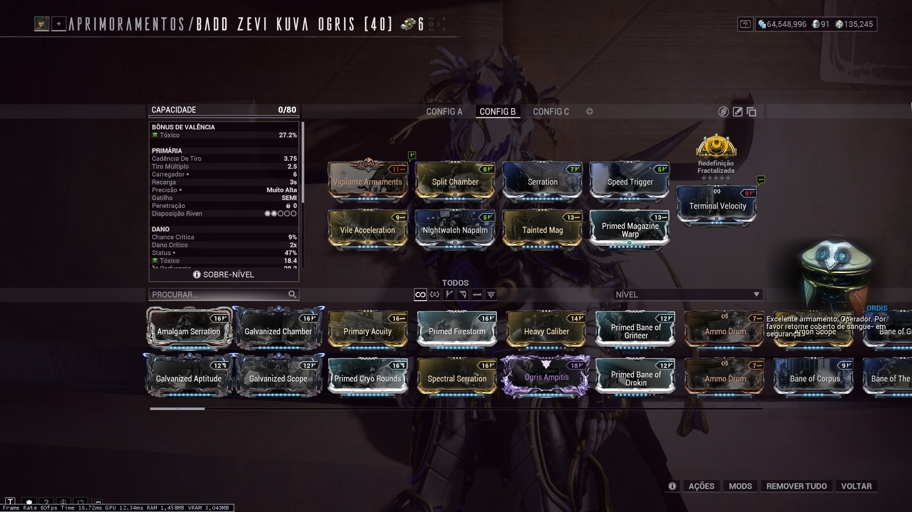
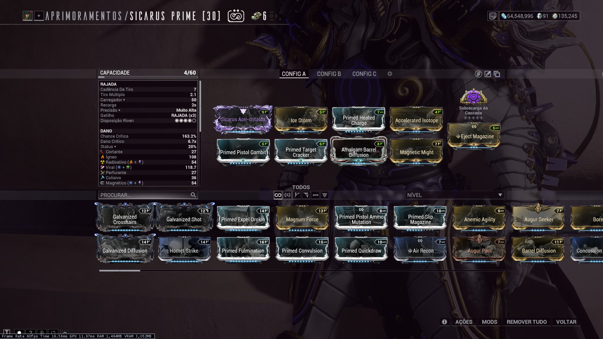
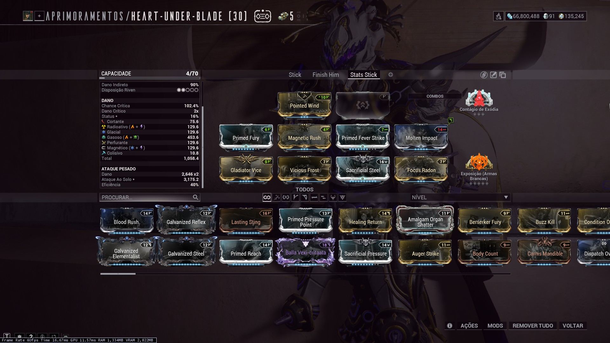
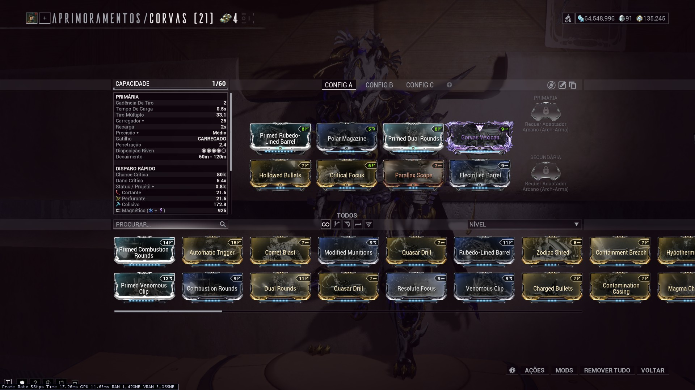
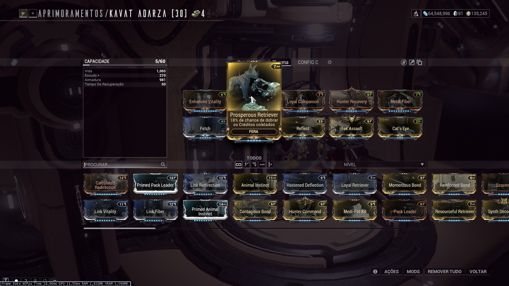

Equipamentos
O que levar para a caçada: Warframes, armas, Operador e Amp.
Warframes
Chroma/Prime
Chroma é uma das escolhas tradicionais para Beneficiária. Sua habilidade Armadura Exasperante fornece um grande aumento de dano e permite acelerar consideravelmente a luta.
A habilidade Sentinela Elemental também pode oferecer sobrevivência adicional.

Chroma possui ainda uma vantagem específica para quem utiliza a Beneficiária como fonte de Créditos: Éfigie pode aumentar os Créditos físicos obtidos ao derrotar a Orb.
A recompensa base da Beneficiária é de 125.000 Créditos, podendo chegar a 250.000 com o bônus adequado do Éfigie. Junte isto a um boost de dobro de créditos e terá 500.000 Créditos.
NOTA: Um detalhe importante para a Build do Chroma é a escolha correta da coloração de energia. As habilidades Sentinela Elemental e Armadura Exasperante tem efeitos diferentes dependendo da coloração escolhida. A coloração escolhida deve ser tal que o elemento da passiva seja Glacial

Outros
De modo geral, podemos dividir o restante dos warframes em duas categorias: Amplificadores de dano e o resto. Warframes como Mirage/Prime, Rhino/Prime, Oberon/Prime, Volt/Prime contam com habilidades que auxiliam na sobrevivência e também proporcionam algum tipo de aumento de dano. São escolhas também excelentes para a caçada, caso o foco não seja apenas os créditos.
Os citados anteriormente se destacam pela flexibilidade de suas habilidades, mas qualquer warframe pode ser utilizado, desde que buildado com foco na sobrevivência e no aumento de dano quando possível.
Armas Primárias
Gerais
Existem duas abordagens para qual arma primária utilizar: A primeira foca em utilizar a arma primária para cobrir combinações elementais faltantes no restante dos equipamentos e, para esta abordagem, a escolha de arma é totalmente particular ao gosto do jogador. Um exemplo de build está ilustrada abaixo, com a Ignis/Wraith cobrindo os elementos Ígneo, e Magnético:

Qualquer primária com boa build é suficiente, mas armas como a Rubico/Prime continuam sendo escolhas populares por seu alto dano.
Zenith e Kuva/Ogris
A segunda abordagem se concentra em utilizar de passivas específicas de armas para acelerar o processo de destruição dos Pilones. Para esta abordagem, duas armas são frequentemente escolhidas: a Zenith e a Kuva/Ogris.


Estas armas contam com mecânicas que permitem a destruição mais rápida dos Pilones. A Zenith tem como passiva penetração infinita ao ativar sua habilidade especial com o disparo alternativo, permitindo a destruição mais rápida dos Pilones. Já a Kuva/Ogris, junto do mod Nightwatch Napalm não atravessa o escudo dos Pilones, mas deixa uma área de efeito em sua explosão, que tem pode ter alcance e dano suficiente para destruir os Pilones dentro do escudo.
Armas Secundárias
Não há uma arma secundária específica recomendada para a caçada. Assim como as primárias gerais, a escolha é particular e deve cobrir elementos faltantes nos outros equipamentos.

Assim como as primárias, qualquer secundária suficientemente forte e bem buildada pode ser utilizada. Uma escolha popular, no entanto, é a Sicarus/Prime.
Armas Brancas
Exposição (Armas Brancas)
Este é um arcano relevante para a caçada à Benificiária. Sua descrição diz: Ao conjurar habilidade: fornecerá 60% de dano Corrosivo aos ataques corpo a corpo por 25s. Acumulará até 240%. Isto significa que qualquer Arma Branca equipada com este arcano já irá cobrir o elemento Corrosivo para a caçada.
Redeemer/Prime
Com seu ataque carregado, a Redeemer/Prime pode causar dano significativo em alvos com uma boa distância. A build abaixo poderia ser melhorada com a instalação do arcano "Exposição" para também cobrir o elemento Corrosivo.

Nota: O ataque carregado da Redeemer/Prime não causa dano dos tipos base Cortante / Perfurante / Colisivo.
Zaws
As Zaws são armas brancas que podem ser construídas com diferentes combinações de lâminas, empunhaduras e garras. A escolha da combinação depende do gosto do jogador, mas o maior diferencial destas armas é a possibilidade de utilizar arcanos exclusivos para Zaws. Em particular, o Contágio de Exódia é relevante para a caçada da Benificiária, pois permite aplicar o dano da Zaw à distância com facilidade, além do dano de Explosivo e inato ao projétil do arcano.

Com esta build e arcanos, somente a Zaw já está cobrindo os elementos: Cortante, Radioativo, Glacial, Gasoso, Perfurante, Colisivo, Magnético, Corrosivo (Exposição), Explosivo (Exódia) e (Exódia). Se o Warframe estiver subsumido com a habilidade "Eletrocussão" do Volt em conjunto com o mod "Eletrocussão Aliada", a Zaw também cobre o elemento Elétrico. Com esta combinação, apenas os elementos Ígneo e Tóxico estão faltantes, com apenas um equipamento!
Habilidades do Helmint
Existem habilidades que podem ser subsumidas de/em warframes que, por vezes com auxilio de mods de aprimoramento, conseguem suprir um elemento para o setup.
| Habilidade | Warframe de Origem | Mod de Aprimoramento | Status |
|---|---|---|---|
| Eletrocussão | Volt | Eletrocussão AliadaAmplificação - Eletrocussão: segurar o botão da habilidade fornecerá 100% de dano Elétrico adicional para o Volt e seus aliados no raio de 15m durante 40s. | Elétrico |
| Castigo | Oberon | Infusão CastiganteAmplificação - Castigo: segurar o botão da habilidade fornecerá 100% de dano Radioativo ao Oberon e seus aliados no raio de 15m durante 40s. | Radioativo |
| Nutrição | Grendel | - |
Archgun
A Archgun é obrigatória para causar dano ao corpo da Profit-Taker. Ela precisa estar equipada com Gravimag e ser invocada utilizando o Archgun Deployer. Após a destruição do escudo, as pernas e corpo da Beneficiária ficam vulneráveis, e tem fraqueza intensificada contra dano Radioativo.
Corvas/Prime
Corvas/Prime possui excelente dano contra a Benificiária e é uma opção muito forte para configurações mais avançadas. Atualmente, Corvas Prime não possui a mesma redução de dano aplicada a várias outras Archguns contra a Benificiária.

Mausolon
A Mausolon é uma das opções mais simples para começar. Possui bom dano, munição confortável e é fácil de utilizar.
Companheiro
Qualquer companheiro do tipo Fera é uma escolha interessante para a caçada, especificamente por conta do mod Prosperous Retriever, que tem chance de dobrar créditos coletados.

Se os créditos não forem o foco da caçada, qualquer companheiro pode ser utilizado, de acordo com a preferência do jogador.
Notas
A Beneficiária causa uma quantidade considerável de dano.
Além do dano direto, seus ataques podem causar efeito Magnético, knockdown e outros efeitos de status.
Mods e habilidades que fornecem resistência a knockdown ou status tornam a luta consideravelmente mais confortável, como Primed Sure Footed e Power Drift.
O Operador possui uma função muito importante durante a fase de escudo. Então arcanos que auxiliem de alguma forma e uma Amp forte ajudam a eliminar inimigos e lidar com a luta. O importante para um iniciante é conseguir permanecer vivo e continuar causando dano.